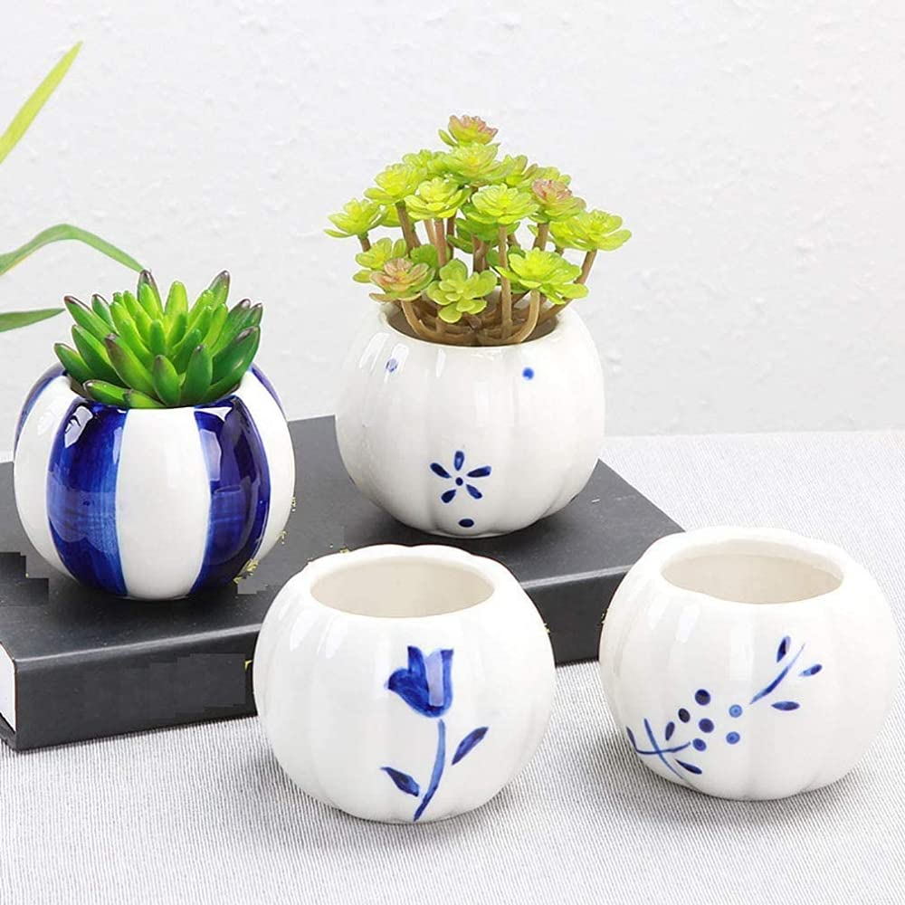
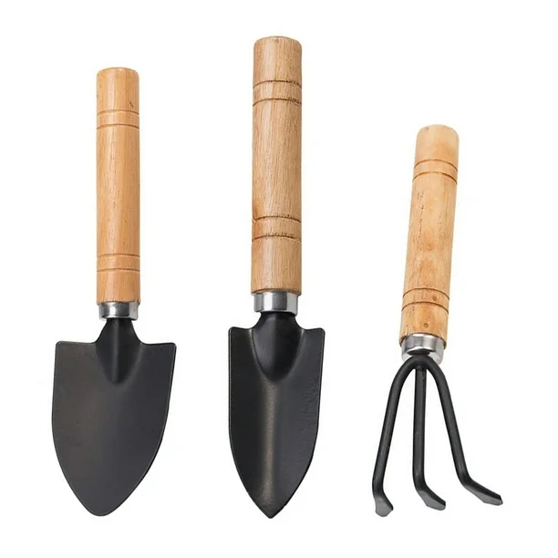

Descubre Nuestros Productos: Plantas, Macetas y Más para Tu Hogar
Plantas para todos los gustos

En nuestra tienda encontrarás una amplia variedad de plantas, desde las clásicas suculentas y cactus, hasta plantas de hojas grandes como monsteras y filodendros. Tenemos opciones ideales para principiantes y también especies más especiales para quienes buscan un toque único en su hogar.
Macetas y accesorios decorativos

No solo vendemos plantas, también ofrecemos macetas de diferentes estilos, tamaños y materiales para que puedas combinar y darle personalidad a tu espacio verde. Además, contamos con accesorios como soportes, platos protectores y etiquetas para facilitar el cuidado de tus plantas.
Kits de cuidado y herramientas

Para que cuidar tus plantas sea sencillo y divertido, disponemos de kits que incluyen fertilizantes orgánicos, herramientas básicas de jardinería y guías con consejos prácticos. Todo pensado para que tus plantas crezcan sanas y fuertes, sin complicaciones.